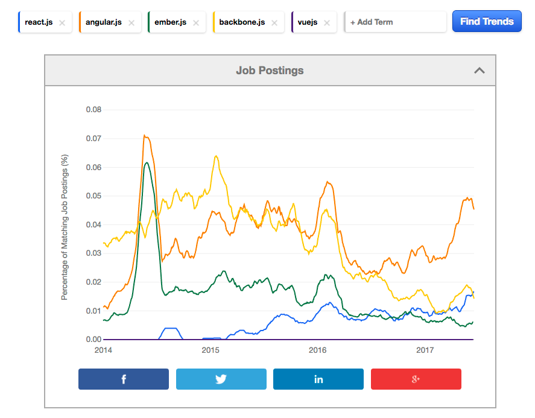

@chrismarx
bit.ly/anglr43
Hi, I'm chris marx, slides are up now at that link. and quick plug, For those that don't know i work at zev ross
spatial analysis, we're a local data science and geospatial consulting company.
To
And Beyond!
I'm talking today about "To angular 4 / infinity and beyond!". All jokes aside, i will be covering
the latest version of angular today, which is 4.
The Mindset
Angular is a framework
Apps are component driven (web-components-ish)
Html templates are still valid html
Opinionated (mostly)
Start with the mindset. Here's a top level overview, so mindset, ecosystem, who should use it and what's terrible
The Mindset
Angular is a framework
The matrix, I mean framework, provides all
Web components, UI Library, Router, Flex Layout, Animations, CLI, Browser Plugin, AJAX
Isomorpohic Rendering and Pluggable Renderers
number 1 angular is a framework. when you step into the matrix, err i mean start using the framework, the framework
provides all.
You get what are essentially web components, ui library, router, flex layout, animations, cli, browser plugin,
http client for doing ajax, really if it's something that's pretty essential to making a single page app work,
chances are angular is going to at least have some basic support for it.. Obviously if you need a mapping framework like leaflet
or need charts, etc., you're going to include other libraries.
We now also have
Isomorphic rendering, or server side rendering supported and officially part of the angular universe with the
addition of angular universal.
To support that feature, angular now comes with a pluggable rendering system, so now you can even do native apps using
thing like react native, or the more recommended solution is to use nativescript, which is a similar effort.
The Mindset
Apps are component driven (ala web-components-ish)
https://angular.io/tutorial
https://angular.io/guide/router
https://github.com/johnpapa/angular-tour-of-heroes
number 2, so Angular is really all about the components now. Angularjs or angular 1 started off with the idea that components were a good thing
but didn't force you to be completely component driven. Now angular is entirely component driven.
For this section, I'm going to be referencing the Angular Tour of Heroes app, which is what all the official
documentation references. it's also what they use to look at advanced topics, and it's very handy to have around
as a reference, you can check it out from that github link.
Here's the basic demo app, it's got the router (which also now supports nested routes, optional states, it's very nice),
it's got 2 different primary page views, and then within each view, there are additional components that are built individually
like the search bar, or the hero detail view, which is used across both views. In page routing (and i'm showing the url here since this
is being shown in an iframe), provide deep links to anywhere in the application.
<body>
To put that app on a page, we just include this
import { Component } from '@angular/core';
import { Router, Event, NavigationEnd } from "@angular/router";
@Component({
selector: 'my-root',
templateUrl : './app.component.html',
styleUrls: ['./app.component.css']
})
export class AppComponent {
title = 'Tour of Heroes';
urlLocation = "";
constructor(private router: Router){
router.events.subscribe((event:Event) => {
if(event instanceof NavigationEnd) {
this.urlLocation = event.url;
}
});
}
}
Ok, how does that work. This is the primary app component. There's is not much here, but if you're not familiar with es6 or typescript
it could look like we're not even doing javascript anymore.
1.The component annotation adds both information to angular about what this class is,
as well as a way to set commonly needed information in a nice succint way, rather than
having to extend a super class, call getters, etc.
It's really just a container, but this is where it all begins.
The selector identifies what tag this app will be rendered into. This is basically web-components,
if you put a angle bracket my-root html tag on the page, it will include what u put in this app.
2. the html template
3. the css - all of the styles will automatically be scoped just to apply to this component. this echoes both css modules
and web components. Currently angular can support several different levels of css view encapsulation, even use
native shadow dom if its available.
4.For this demo, I added the event.subscribe, which simply sets up a subscription
to the router events, and when there is a successful navigation it updates the urlLocation class property, which are exposed
to the template. We'll talk more later about how angular handles change detection and knows to update the views.
{{title}} ----- Show URL:{{urlLocation}}
Dashboard
Heroes
This is what the html template looks like for this basic component. The curly brackets are replaced
with what the values those variables in the compoennt contain.
You can see we have another custom tag already here, that the router outlet, this is where the different
views of the app will be rendered.
You can see we've got some additional attributes being added to the link elements, those are router specific directives to activate
the other route views, and the router-outlet, where the views will be rendered. you can have many nested router-outlets, which
lets you create whatever kind of ui you want. The router in some ways, is also where angular apps tend to prefer
storing state.
import { NgModule } from '@angular/core';
import { Routes, RouterModule } from '@angular/router';
import { DashboardComponent } from './dashboard.component';
import { HeroesComponent } from './heroes.component';
import { HeroDetailComponent } from './hero-detail.component';
const routes: Routes = [
{ path: '', redirectTo: '/dashboard', pathMatch: 'full' },
{ path: 'dashboard', component: DashboardComponent },
{ path: 'detail/:id', component: HeroDetailComponent },
{ path: 'heroes', component: HeroesComponent }
];
@NgModule({
imports: [RouterModule.forRoot(routes,{useHash:true})],
exports: [RouterModule]
})
export class AppRoutingModule { }
Here's the router config, each route in the application is mapped to a component. You can also setup child routes
even do lazy route loading (which means that other "page views" in your app, and all their resources, (unless they're used elsewhere))
will actually be built into separate files and not loaded until those page views are active (or even can be preloaded in the
background automatically)
I added the useHash here, like all modern apps, angular uses html5 push state, but to embed the app and run without a normal server
i reverted to the old hash-bang syntax, which still works perfectly fine.
import { Component, OnInit } from '@angular/core';
import { Router } from '@angular/router';
import { Hero } from './hero';
import { HeroService } from './hero.service';
@Component({
selector: 'my-dashboard',
templateUrl: './dashboard.component.html',
styleUrls: ['./dashboard.component.css']
})
export class DashboardComponent implements OnInit {
heroes: Hero[] = [];
constructor(
private router: Router,
private heroService: HeroService) {
}
ngOnInit(): void {
this.heroService.getHeroes()
.then(heroes => this.heroes = heroes.slice(1, 5));
}
gotoDetail(hero: Hero): void {
const link = ['/detail', hero.id];
this.router.navigate(link);
}
}
/*just for demo, can also use interfaces here too*/
export class Hero {
id: number;
name: string;
}
typically each major page view is a component as well. Here the component is setup more typically, with all
the resources in their own files. This is the dashboard, the default view.
4. Notice the array has type "Hero", this is very nice since all the methods are deal with hero records can now expect
exactly what they are getting, and typescript will give type errors immediately, as well as intellisense,
more on that later.
./dashboard.component.html
Top Heroes
and here is the dashboard component's template. notice here that the search bar is split out into
it's own component, since this is a specialized peice of the ui, and could also easily be used in other
areas of the application. So how does your app know though, that this custom component is available?
@Injectable()
export class HeroService {
private heroesUrl = 'app/heroes'; // URL to web api
constructor(private http: Http) { }
getHeroes(): Promise<Array<Hero>> {
return this.http
.get(this.heroesUrl)
.toPromise()
.then((response) => {
return response.json().data as Hero[];
})
.catch(this.handleError);
}
...
a service, this is where reusable logic, business logic, non view related processing goes.
The next slide is usually where people start getting scared. I realize there are unfamiliar terms here
but it's really pretty darn sensical
@NgModule({
imports: [
BrowserModule,
FormsModule,
AppRoutingModule,
HttpModule,
InMemoryWebApiModule.forRoot(InMemoryDataService, { delay: 600 })
],
declarations: [
AppComponent,
DashboardComponent,
HeroSearchComponent,
HeroesComponent,
HeroDetailComponent,
],
providers: [
HeroService,
{ provide: APP_BASE_HREF, useValue: '/' },
{ provide: LocationStrategy, useClass: HashLocationStrategy }
],
bootstrap: [AppComponent]
})
export class AppModule { }
that's clearly laid out int he main app.module file. The imports section defines what additional
modules you're using (so other entire bundles of elements, services etc), and then also what components
this module declares, as well as what services it can provide. (Those additioanl providers for location I added
to enable the hash location. It is however a nice example of how easy it is to configure the behavior of a module.
if you want to override how a particular service works, or provider an alternate implemetation of the service,
you can define it here for dependency injection (more on that later too)). For large projects, being able to
keep track so concisely of everything that is involved or required by ur module is a life saver.
The Mindset
Angular is a framework
Apps are component driven (ala web-components-ish)
Html templates are still valid html
To me this was always a selling point for angular, as a developer, I would often get a working
mockup of static html page, and then it would be my job to actually do things. the html and css would
already be pretty much mostly valid, I just need to add the additional logic, loops, filters, etc. Angulars
approach really shines here for that.
The Mindset
Angular is a framework
Apps are component driven (ala web-components-ish)
Html templates are still valid html
Opinionated (mostly)
Finally, opinionated. Angular is fairly opinionated. You could use it without typescript, but it will be more painful,
as most of the examples are in typescript. rxjs is baked in, and angular basically thinks you should use (and we will see why).
The framework comes with solutions to most problems
and it's easiest to just use them. Angular 2/4 has also taken what I think the wonderful step to produce
an official style guide, for people like me, this is a godsend. I want to send off a developer,
and say, make this component, and i want it to look exactly as if i did it myself,
and i would do it following the styleguide and so can they. Its awesome.
There are some things that angular does leave up to you. For instance, some of the change detection options
The Mindset
Angular is a framework
Apps are component driven (ala web-components-ish)
Html templates are still valid html
Opinionated (mostly)
Change detection - is all about how these frameworks compare some current state with some new state
and figure out if something has changed, and whether there needs to be some re-rendering of the dom.
Maybe add slide with figures here. Afai understand it, React treats all data as immutables, and
so if you want the data to update, you pass it a new object, and it can tell the different with
straight object equality, it then renders the dom virtually, diffs, and then renders the changed areas.
Vue is a bit more like angular, where you specify which properties count as important data in your data config
and those are the only values that are watched for changes, and then diffed with virtual dom.
Angular actually gives you choices here. You can stick to the easiest method, which we saw earlier, and just
have angular build a change detection class for each of your componenets, and it will figure out
what data can change, and watch everything, and update the values in the dom accordingly. Or, you
can tell angular that you are going to use immutable.js, and it will only look at changes based on
object equality. Or you can go with rxjs, and use observables for data that will change. In the later
2 cases, you can also tell angular to only search the component trees that are strictly affected by your
changes.
You're also free of course to use ngrx, which is a unidirectional data store just like react, and you
get the history and everything (i havent used it).
I realize that was alot, so i'm going to fly through the rest of this
The Ecosystem
Typescript
CLI, Webpack
RxJS
Dependency Injection
NgRx (optional)
Angular Material
Angular Universal
Nativescript / React Native
Augury
alright, yeah, that is a lot, we're flying now
1. Typescript
I think typescript has basically won. Typescript gives you es6 transpilation like babel, but
it also gives you types, and features from javascript next (es7 ,etc)
but wait, you didn't even add any types! i like this example best from typescript, because people
are always afraid, like, oh, i'm going to spend all day writing string and number etc. nope. duck typing ftw!
typescript also gives you tooling like you would expect in a static language with an ide (even though i just use atom)
you can automatically resolve the es6 imports for instance, and not waste time manually including all those import statements
2. CLI
ok, so here's the cli, it's sped up a bit, but this is no more than a minute or 2 in reality. here we go, you
make a new app. angular creates everything u need, all the typescript configuration, the webpack, all the default
packages u need for both dev and production. and then u can serve it with an angular node server, already
configured with live reload while you're working, including ahead-of-time compiling or aot, that means
you do get error checking in your templates just like react, even though we dont have to use the specialized
jsx syntax. when u add components or services or whatever, angular automatically adds them to ur module
definition too. and when you're ready to ship your app, u just hit another command, and u get a complete
bundle thats minified, uglified, tree shaken, all extra dependecnies or unused code removed, revved and ready
to go, even with environment specific variables, etc.
RXJS
search(term: string): void {
// Push a search term into the observable stream.
this.searchTerms.next(term);
}
ngOnInit(): void {
this.heroes = this.searchTerms
.debounceTime(300) // wait for 300ms pause in events
.distinctUntilChanged() // ignore if next search term is same as previous
.switchMap(term => term // return the http search observable or the observable of empty heroes if no search term
? this.heroSearchService.search(term)
: Observable.of([]))
.catch(error => {...});
}
/* or */
search(term: string): Observable {
return this.http
.get(`app/heroes/?name=${term}`)
.retry(3)
.catch((error: any) => {
console.error('An friendly error occurred', error);
return Observable.throw(error.message || error);
});
}
Reactive Extensions for JS
handling asnychronous streams of data
When to use this framework
You like Typescript
Bigger projects (mostly)
1. bigger projects - although once you get to know it, there really isnt any reason to use it for smaller apps either
2. typescript
When to use this framework
You like Typescript
Bigger projects (mostly)
You don't like having to make a lot decisions
When to use this framework
You like Typescript
Bigger projects (mostly)
You don't like having to make many decisions
You like being faster than React :P
1. bigger projects - although once you get to know it, there really isnt any reason to use it for smaller apps either
2. typescript
When cont.
You want a framework that is not going away (supported by google)
You want a job

https://www.indeed.com/jobtrends/q-react.js-q-angular.js-q-ember.js-q-backbone.js-q-vuejs.html
5. you want a framework that is not going away, will remain supported and actively developed (google), with new technology choices
by google engineers. And you want to use a framework used by paypal, hbo, sony, tesla, etc, and of course google
6. You want a job
What is terrible
Really good at all its setup to do, not so good for other things...
People say there is a learning curve
Everything is still a little bleeding edge
There is magic going on
But but the imports and the crazy dependency injection! (Hero)
The size!
The speed!
As long as you don't try to do something crazy, like create your own angular library, so you can resuse
a set of components and service across apps.
bleeding edge - material library hasn't fully implemented everythign from the angular 1 version
but there are also other ui libs out there too
imports! dependency injection! with typescript, as soon as u write something like Hero
any ide (even things like atom, which is what i use), can now automatically resolve the class
and add the import statements for you. and we saw how the cli can update your depenncy injection
too, so i think the cries of, BUT BOILERPLATE! are over rated at this pooint, and honestly,
for a big application, i want to be tracking the kinds of things u are able to track there.
we saw the basic size, but even tour of heroes, with rxjs, etc. was 94kb for all the main js and libraries.
speed - if we have time.
Bonus! Lightning Round!
In many ways, all these frameworks are all doing similar things for you. The question as i see it are
who do you want to invest in, which technologies do you like to use, what approaches do you like better
to some of the thigns like html templating or change detection.
Questions
@chrismarx
bit.ly/anglr43

 4 / Infinity
4 / Infinity